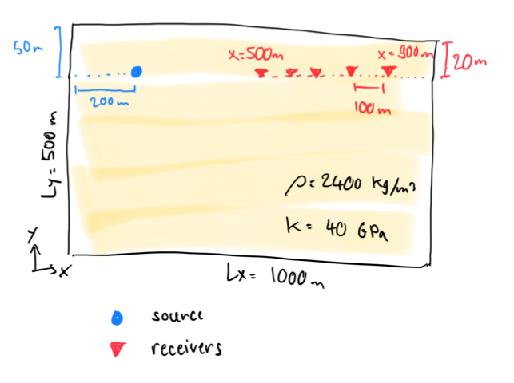

Agenda
üìö Solving elliptic PDEs, 1D to 2D
üíª Personal Julia install, Julia'sProjectenvironment, Julia's package manager
üöß Exercises:
Damped wave equation in 2D
Port 1D codes to 2D
üëâ get started with exercises
The damped wave equation
Spectral analysis of linear PDEs
Pseudo-transient method for solving elliptic PDEs
Spatial discretisation: 1D and 2D
In the previous lecture, we established that the solution to the elliptic PDE could be obtained through integrating in time a corresponding parabolic PDE:
\[ \frac{\partial C}{\partial t} - \frac{\partial^2 C}{\partial x^2} = 0 \]and discussed the limitation of this approach, for numerical modelling, i.e., the quadratic dependence of the number of time steps on the number of grid points in spatial discretisation.
In this lecture, we'll improve the convergence rate of the elliptic solver, and consider the generalisation to higher dimensions
Let's recall the stability conditions for diffusion and acoustic wave propagation:
dt = dx^2/dc/2 # diffusion
dt = dx/sqrt(1/β/ρ) # acoustic wave propagationWe can see that the acceptable time step for an acoustic problem is proportional to the grid spacing dx, and not dx^2 as for the diffusion.
The number of time steps required for the wave to propagate through the domain is only proportional to the number of grid points nx.
Can we use that information to reduce the time required for the elliptic solver to converge? In the solution to the wave equation, the waves do not attenuate with time: there is no steady state!
Let's add diffusive properties to the wave equation by simply combining the physics:
\[\begin{aligned} \rho\frac{\partial V_x}{\partial t} &= -\frac{\partial P}{\partial x} \\[10pt] \beta\frac{\partial P}{\partial t} + \frac{P}{\eta} &= -\frac{\partial V_x}{\partial x} \end{aligned}\]Note the addition of the new term \(\frac{Pr}{\eta}\) to the left-hand side of the mass balance equation, which could be interpreted physically as accounting for the bulk viscosity of the gas.
Equvalently, we could add the time derivative to the diffusion equation
\[\begin{aligned} \rho\frac{\partial q}{\partial t} + \frac{q}{D} &= -\frac{\partial C}{\partial x} \\[10pt] \frac{\partial C}{\partial t} &= -\frac{\partial q}{\partial x} \end{aligned}\]In that case, the new term would be \(\rho\frac{\partial q}{\partial t}\), which could be interpreted physically as adding the inertia to the momentum equation for diffusive flux.
Note that in 1D the both modifications are equivalent up to renaming the variables. The conceptual difference is that in the former case we add new terms to the vector quantity (diffusive flux \(q\)), and in the latter case we modify the equation governing the evolution of the scalar quantity (pressure \(P\)).
Let's eliminate \(V_x\) and \(q\) in both systems to get one governing equation for \(P\) and \(C\), respectively:
\[\begin{aligned} \beta\frac{\partial^2 P}{\partial t^2} + \frac{1}{\eta}\frac{\partial P}{\partial t} &= \frac{1}{\rho}\frac{\partial^2 P}{\partial x^2} \\[10pt] \rho\frac{\partial^2 C}{\partial t^2} + \frac{1}{D}\frac{\partial C}{\partial t} &= \frac{\partial^2 C}{\partial x^2} \end{aligned}\]We refer to such equations as the damped wave equations. They combine wave propagation with diffusion, which manifests as wave attenuation, or decay. The damped wave equation is a hyperbolic PDE.
In the following, we'll use the damped wave equation for concentration \(C\) obtained by augmenting the diffusion equation with density \(\rho\).
Starting from the existing code implementing time-dependent diffusion, let's add the intertial term \(\rho\frac{\partial q}{\partial t}\).
First step is to add the new physical parameter \(\rho\) to the # physics section:
# physics
...
ρ = 20.0And to change the initial conditions to have more interesting time evolution:
# array initialisation
C = @. exp(-(xc-lx/4)^2); C_i = copy(C); C[1] = 1Then we modify the time loop to incorporate the new physics:
for it = 1:nt
#qx .-= ...
C[2:end-1] .-= dt.*diff(qx)./dx
...
endüëâ Your turn. Try to add the intertial term.
Hint: There are two ways of adding the intertial term into the update rule.
We could either take the known flux
qinq/dcfrom the previous time step (explicit time integration), or the unknown flux from the next time step (implicit time integration).Could we treat the flux implicitly without having to solve the linear system?
What are the benefits of the implicit time integration compared to the explicit one?
If the implementation is correct, we should see this:
The waves decay, now there is a steady state! üéâ The time it takes to converge, however, doesn't seem to improve...
Now we solve the hyperbolic PDE, and with the implicit flux term treatment, the time step should be now proportional to the grid spacing dx instead of dx^2. Looking at the damped wave equation for \(C\), and recalling the stability condition for wave propagation, we modify the time step, reduce the total number of time steps, and increase the frequency of plotting calls:
# numerics
...
nvis = 5
# derived numerics
...
dt = dx/sqrt(1/ρ)
nt = 5nxRe-run the simulation and see the results:
Now, this is much better! We observe that in less time steps, we get a much faster convergence. However, we introduced the new parameter, \(\rho\). Does the solution depend on the value of \(\rho\)?
üëâ Try changing the new parameter œÅ, increase and decrease it. What happens to the solution?
We noticed that depending on the value of the parameter ρ, the convergence to steady-state can be faster or slower. If ρ is too small, the process becomes diffusion-dominated, and we're back to the non-accelerated version. If ρ is too large, waves decay too slow.
If the parameter ρ has optimal value, the convergence to steady-state could be achieved in the number of time steps proportional to the number of grid points nx and not nx^2 as for the parabolic PDE.
The idea of accelerating the convergence by increasing the order of PDE dates back to the work by Frankel (1950) where he studied the convergence rates of different iterative methods. Frankel noted the analogy between the iteration process and transient physics. In his work, the accelerated method was called the second-order Richardson method
In this course, we call this and any method that builds upon the analogy to transient physics... the pseudo-transient method.
Using this analogy proves useful when studying multi-physics and nonlinear processes. The pseudo-transient method isn't restricted to solving the Poisson problems, but can be applied to a wide range of problems that are modeled with PDEs.
In a pseudo-transient method, we are interested only in a steady-state distributions of the unknown field variables such as concentration, temperature, etc.
We consider time steps as iterations in a numerical method. Therefore, we replace the time \(t\) in the equations with pseudo-time \(\tau\), and a time step it with iteration counter iter. When a pseudo-transient method converges, all the pseudo-time derivatives \(\partial/\partial\tau\), \(\partial^2/\partial\tau^2\) etc., vanish.
We should be careful when introducing the new pseudo-physical terms into the governing equations. We need to make sure that when iterations converge, i.e., if the pseudo-time derivatives are set to 0, the system of equations is identical to the original steady-state formulation.
For example, consider the damped acoustic problem that we introduced in the beggining:
\[\begin{aligned} \rho\frac{\partial V_x}{\partial\tau} &= -\frac{\partial P}{\partial x} \\[10pt] \beta\frac{\partial P}{\partial\tau} + \frac{P}{\eta} &= -\frac{\partial V_x}{\partial x} \end{aligned}\]At the steady-state, the second equation reads:
\[ \frac{P}{\eta} = -\frac{\partial V_x}{\partial x} \]The velocity divergence is proportional to the pressure. If we wanted to solve the incompressible problem (i.e. the velocty divergence = 0), and were interested in the velocity distribution, this approach would lead to incorrect results. If we only want to solve the Laplace problem \(\partial^2 P/\partial x^2 = 0\), we could consider \(V_x\) purely as a numerical variable.
In other words: only add those new terms to the governing equations that vanish when the iterations converge!
We don't want to guess the optimal parameter values for every problem. For linear problems with constant coefficients, there is a way to get an exact optimal value for any combination of phyisics and boundary conditions. Analytics is hard, so we'll consider only the simplest elliptic problem with constant values at boundaries:
Let's try this value:
ρ = (lx/(dc*2π))^2https://docs.julialang.org/en/v1/stdlib/REPL/
julia starts the REPL, run julia --help to see options.
Pretty powerful REPL:
completion
history:
start typing + up-arrow
Ctrl-r
unicode completion
several sub-modes: shell, Pkg, help
they are displayed with a different prompt
shell mode in Windows, try: shell> powershell
Demo
Docs:
Powerful package manager:
installing, updating and removing packages
separate environments for separate projects
Demo
Take-home: make a separate Project for each of your projects/assignments!
Packages installed in your global environment are always available, thus useful for utility packages.
I have installed in my global environment:
Revise.jl – To load it at startup: mkdir -p ~/.julia/config/ && echo "using Revise" >> ~/.julia/config/startup.jl
BenchmarkTools.jl – Accurate timers for benchmarking, even quick fast running functions
IJulia.jl – The Julia Jupyter kernel. Needs to be installed globally.
Infiltrator.jl – A debugger. Pretty basic but works well without slowing down program execution (unlike Debugger.jl which has more features).
StatProfilerHTML.jl or ProfileView.jl – To be used with the built in Profile module. Displays nice flame graphs (probably does not work on the GPU)
üëâ See Logistics for submission details.
The goal of this exercise is to:
Implement 2D wave equation
Consolidate the finite-difference discretisation
Familiarise with visualisation
The goal of this first exercise is to repeat the steps we did in class with the diffusion codes going from the 1D to the 2D implementation.
Starting from the 1D acoustic wave equation we discussed in lecture 3, extend the 1D code to a 2D configuration. Use the same parameters for the \(y\)-direction quantities as the one for the \(x\)-direction.
Create a new Julia script acoustic_2D_v1.jl for this homework. The script should produce a heatmap() plot that updates upon time steps, with labelled axes and physical time displayed as title.
Use nx = 128 and ny = 129 grid points.
nx ≠ ny may prevent errors with staggering to occur.Record the pressure at position \((x,y) = (5,7)\) during the entire simulation and report it as a subplot (pressure as function of time).
üëâ See Logistics for submission details.
The goal of this exercise is to:
Implement 2D wave equation
Consolidate the finite-difference discretisation
Familiarise with visualisation
In this second exercise, you will implement a more concise version of the 2D wave equation.
Starting from the 2D wave equation code from exercise 1, reformulate the physics calculation without the explicit definition of the \(q_x, q_y\) terms; only use velocities \(V_x, V_y\) and pressure \(P\).
Create a new Julia script acoustic_2D_v2.jl for this homework. The script should produce a heatmap() plot that updates upon time steps, with labelled axes and physical time displayed as title.
Use nx = 128 and ny = 129 grid points and the same parameters as for exercise 1.
Create a 3-panels plot that shows the 2D pressure \(P\) and the velocity \(V_x\) fields, as well as the 1D cross-section of the pressure field at \(Ly/2\).
üëâ See Logistics for submission details.
The goal of this exercise is to:
Implement 2D wave equation
Consolidate the finite-difference discretisation
Familiarise with visualisation
In this third exercise, implement the second-order wave equation as reported at the beginning of lecture 3,
\[ \frac{∂^2P}{∂t^2} = c^2 ∇^2 P~, \]where
\(P\) is pressure,
\(c\) a non-negative real constant, here the speed of sound.
Verify that \(c=\sqrt(K/ρ)\) and add c as new parameter to a # Derived physics section in the code.
The challenge here is to implement the second-order time derivative of the pressure \(P\), which expands as
\[ \frac{∂^2P}{∂t^2} = P^{t+∆t} - 2~P^{t} + P^{t-∆t}~,\]reason you actually need 3 explicit time integration layer, \(P_\mathrm{new},~P_\mathrm{current},~P_\mathrm{old}\), updating \(P_\mathrm{new}\) as from the two others and using \(P_\mathrm{current}\) in the spatial derivatives.
Also, make sure to initialise all 3 pressure arrays with the same Gaussian initial condition.
Pold, P and Pnew; in Pold you can store the values at time (it-1), while you can use the array P for holding current (it) pressure values and finally use Pnew for prediction at (it+1). Don't forget to assign the appropriate updates at the end of the time loop.Create a new Julia script acoustic_2D_v3.jl for this homework. The script should produce a heatmap() plot that updates upon time steps, with labelled axes and physical time displayed as title.
Use nx = 128 and ny = 129 grid points and the same parameters as for exercise 1 and 2.
üëâ See Logistics for submission details.
The goal of this exercise is to:
Implement 2D wave equation
Record the signal on a synthetic seismic array
Train visualisation
In this last exercise, you will implement a synthetic wave propagation solver, to resolve seismic pressure (P-)wave propagation in a sandstone. You will deploy an array of synthetic geophones (receivers) and record the seismic signal.
Create a new Julia script acoustic_2D_v4.jl for this homework, starting from the code you developed for exercise 2.

Implement the following changes:
Change the domain extend to \(L_x=1000\) m, \(L_y=500\) m (with origin located in the bottom left corner of the model)
For sandstone, set the elastic moduli \(K=40\) GPa and the density \(ρ=2400\) Kg/m\(^3\)
Define a Gaussian function for the source at \(t=0\), with centre location \((x_s, y_s)\) at \(x_s = 200\) and at \(50\) m below the surface. Use a standard deviation of \(5\) m and an amplitude of \(1\) Pa.
Run the experiment for a total \(t_\mathrm{tot}=0.2\) sec
Set pressure values as P[:,end] .= P[:,end-1] in order to minimise boundary effects on the top boundary
You should obtain a similar output for your figure (try saving it as .png from within Julia)

In a second step,
Add 5 monitoring stations located at \(y_\mathrm{monit}\) ~\(20\) m below the ground between \(x=500\) and \(900\) m, distant from each other by \(100\) m.
Record and store the pressure in each monitoring station throughout the entire simulation
For the first station (located at \(x=500\) m), find the arrival time for which the pressure \(P > 0.02\) Pa
Knowing at which time the wave hit the first station, you can post-process and report following (as formatted output in the REPL or on a figure):
First wave arrival time (in s) at station \(x_s=500\) m
Distance (∆_dist) the wave travelled
\(x\)-location of the seismic source